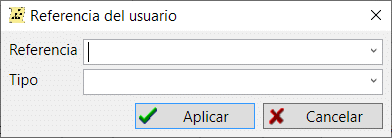

Las referencias de usuario son un tipo de dato especial que se utiliza en los registros de personas para añadir diversas notas. El estándar GEDCOM no define una finalidad para este objeto y se introdujo únicamente para comodidad del usuario—para ser utilizado como una nota breve.
El propio GEDKeeper define la finalidad de las referencias de usuario: mostrar marcas especiales sobre las personas en los diagramas de árbol. Por ejemplo, si una persona participó en la Gran Guerra Patria y su ficha de persona tiene la referencia correspondiente, esta persona se muestra en los diagramas de árbol con una estrella roja. Si la persona murió, la referencia correspondiente añade un borde negro a la estrella.
A continuación se indican las referencias de usuario predefinidas disponibles en GEDKeeper:
| URSS:II Guerra Mundial:Retaguardia |
| URSS:II Guerra Mundial:Combatiente |
| URSS:II Guerra Mundial:Muerto en combate |
| RI:George Knight |
| URSS:Víctima |
| Religión:Islam |
| Religión:Catolicismo |
| Religión:Ortodoxia |
| Religión:Viejos creyentes |
Se añadirán nuevas referencias de usuarios a GEDKeeper según sea necesario.

Las referencias de usuario se asignan en la pestaña "Referencias de usuario" de la ventana del editor de personas.
Ver también: Persona.